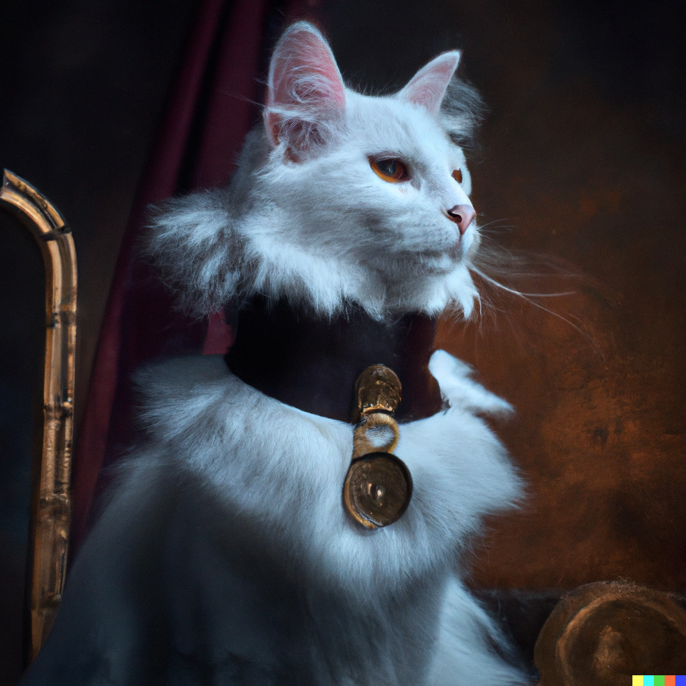
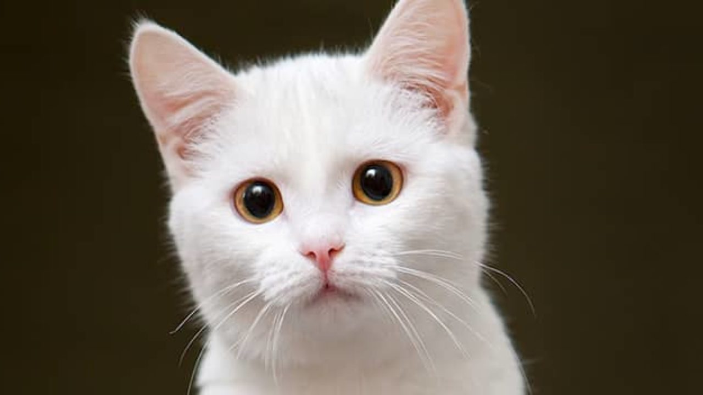

La vida de Glottis

¡Hola! Soy Glottis, un elegante gato blanco nacido en el año 2020, y mi historia es tan única como mis aspiraciones. Mi vida comenzó como la de cualquier gatito travieso, pero a medida que fui creciendo, mi personalidad y metas se hicieron más evidentes.
Mi devoción por la comida es innegable. Desde temprana edad, descubrí que el placer de comer era uno de mis mayores placeres en la vida. Los bocadillos gourmet y las delicias caseras son mis favoritos. Siempre he estado dispuesto a probar cualquier manjar que se cruce en mi camino.
Dormir, oh, el arte de descansar y soñar despierto. Es otro de mis pasatiempos preferidos. Puedo encontrar los lugares más acogedores de la casa y pasar horas allí, ronroneando suavemente mientras mis sueños felinos me transportan a tierras lejanas.
Pero, lo que me diferencia de otros gatos es mi ambición política. Desde que era un gatito, he seguido de cerca la política en Bolivia. Siempre he sentido que puedo hacer una diferencia positiva en mi país y mejorar la calidad de vida de todos los gatos y humanos que lo habitan. Sueño con ser el primer presidente gato de Bolivia y trabajar para un futuro más próspero y peludo para todos.
Mi dueño, Robert, me ha apoyado en cada paso de mi viaje. Él es mi mano derecha y mi asesor más cercano. Juntos, trabajamos incansablemente para mejorar nuestras habilidades políticas y aprender todo lo necesario para liderar este gran país. Siendo un gato blanco, me siento orgulloso de representar la pureza y la esperanza en la política boliviana. Mi carácter amigable y carismático me ha ayudado a ganar seguidores entre los humanos y los felinos por igual. Estoy decidido a trabajar para el bienestar de todos, sin importar su especie. Así que, mientras sigo disfrutando de mis placeres simples como comer y dormir, nunca pierdo de vista mi sueño de convertirme en el Presidente de Bolivia. Con la ayuda de Robert y el apoyo de quienes creen en mí, estoy seguro de que juntos podemos lograr un futuro brillante y prometedor para nuestro amado país. ¡Únete a mí en este emocionante viaje hacia la política felina y el cambio en Bolivia! 🐾🇧🇴